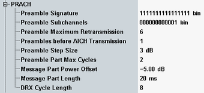

The "PRACH" settings configure the physical random access procedure that can be initiated by the UE. For additional settings related to the initial preamble power, refer to "Open Loop Power Control".
For background information, refer to "Random Access Procedure".
All settings require option R&S CMW-KS410.

Specifies which of the 16 signatures defined by 3GPP TS 25.213 are available and associated with the PRACH. From left to right, the bit sequence defines the availability of signature 15 to signature 0 (0=not available, 1=available).
Option R&S CMW-KS410 is required.
Remote command:Specifies which of the 12 PRACH subchannels are available. From left to right, the bit sequence defines the availability of subchannel 11 to subchannel 0 (0=not available, 1=available). A PRACH subchannel defines a subset of the total set of uplink access slots; see 3GPP TS 25.214.
Option R&S CMW-KS410 is required.
Remote command:Maximum number of preambles to be transmitted before a single preamble cycle is terminated.
Option R&S CMW-KS410 is required.
Remote command:Number of preambles to be received before the instrument transmits the AICH. For a successful registration, this value must not exceed the "Preamble Maximum Retransmission".
Option R&S CMW-KS410 is required.
Remote command:Transmit power difference between two consecutive preambles.
Option R&S CMW-KS410 is required.
Remote command:Maximum number of times the preamble cycle is repeated.
Option R&S CMW-KS410 is required.
Remote command:Transmit power difference between the last preamble transmitted and the RACH message part.
Option R&S CMW-KS410 is required.
Remote command:Length of the RACH transmission time interval (TTI) in ms. According to 3GPP, a RACH can employ either 10 ms or 20 ms TTI.
Option R&S CMW-KS410 is required.
Remote command:The discontinuous reception (DRX) cycle length equals 2n frames where n is specified by this parameter. The DRX cycle can be used by the UE in idle mode to reduce power consumption. In that case, the UE needs only to monitor one page indicator in one paging occasion per DRX cycle.
Option R&S CMW-KS410 is required.
Remote command: